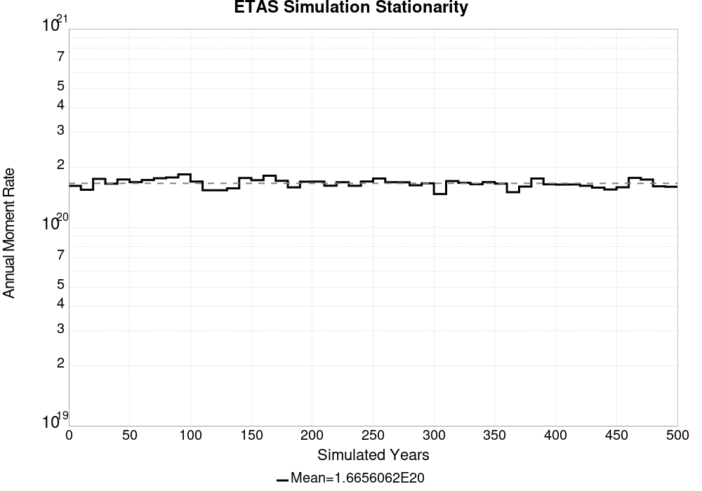

| Start 2012, 500 yr, kCOV=1.16, Spontaneous, Historical Catalog | |
|---|---|
| Num Simulations | 1000 |
| Start Time | 2012/01/01 00:00:00 UTC |
| Start Time Epoch Milliseconds | 1325376000000 |
| Duration | 500 Years |
| Includes Spontaneous? | true |
| Trigger Ruptures | (none) |
| Historical Ruptures | 60366 Trigger Ruptures |
| First: M7.3 at 1852/01/05 04:40:39 UTC | |
| Last: M3.2 at 2011/12/31 19:14:44 UTC | |
| Largest: M7.9 at 1857/01/09 16:25:39 UTC | |
| Config Generated With | u3etas_config_builder.sh --start-year 2012 --num-simulations 1000 --duration-years 500 --include-spontaneous --historical-catalog --etas-k-cov 1.16 --hpc-site USC_HPC --nodes 36 --hours 24 --queue scec |
Legend
| Mag | Mean | 2.5 %ile | 97.5 %ile | Median | Mode | Long-Term Fault System Solution | 500 yr Probability | 500 yr Prob 95% Conf | 500 yr Supra-Seis Prob |
|---|---|---|---|---|---|---|---|---|---|
| M≥5 | 7.814 | 6.714 | 9.490 | 7.702 | 7.798 | 8.609 | 1.000 (100.00%) | [99.52% 100.00%] | 1.000 (100.00%) |
| M≥5.1 | 6.180 | 5.308 | 7.508 | 6.098 | 6.230 | 6.830 | 1.000 (100.00%) | [99.52% 100.00%] | 1.000 (100.00%) |
| M≥5.2 | 4.881 | 4.212 | 5.864 | 4.820 | 4.658 | 5.417 | 1.000 (100.00%) | [99.52% 100.00%] | 1.000 (100.00%) |
| M≥5.3 | 3.849 | 3.328 | 4.626 | 3.798 | 3.902 | 4.295 | 1.000 (100.00%) | [99.52% 100.00%] | 1.000 (100.00%) |
| M≥5.4 | 3.029 | 2.610 | 3.676 | 2.984 | 2.816 | 3.404 | 1.000 (100.00%) | [99.52% 100.00%] | 1.000 (100.00%) |
| M≥5.5 | 2.376 | 2.048 | 2.864 | 2.350 | 2.354 | 2.696 | 1.000 (100.00%) | [99.52% 100.00%] | 1.000 (100.00%) |
| M≥5.6 | 1.860 | 1.602 | 2.260 | 1.834 | 1.790 | 2.133 | 1.000 (100.00%) | [99.52% 100.00%] | 1.000 (100.00%) |
| M≥5.7 | 1.450 | 1.250 | 1.748 | 1.434 | 1.422 | 1.686 | 1.000 (100.00%) | [99.52% 100.00%] | 1.000 (100.00%) |
| M≥5.8 | 1.124 | 0.960 | 1.346 | 1.112 | 1.138 | 1.331 | 1.000 (100.00%) | [99.52% 100.00%] | 1.000 (100.00%) |
| M≥5.9 | 0.855 | 0.734 | 1.012 | 0.844 | 0.834 | 1.036 | 1.000 (100.00%) | [99.52% 100.00%] | 1.000 (100.00%) |
| M≥6 | 0.675 | 0.580 | 0.798 | 0.668 | 0.634 | 0.836 | 1.000 (100.00%) | [99.52% 100.00%] | 1.000 (100.00%) |
| M≥6.1 | 0.519 | 0.442 | 0.618 | 0.516 | 0.524 | 0.660 | 1.000 (100.00%) | [99.52% 100.00%] | 1.000 (100.00%) |
| M≥6.2 | 0.409 | 0.346 | 0.488 | 0.406 | 0.416 | 0.529 | 1.000 (100.00%) | [99.52% 100.00%] | 1.000 (100.00%) |
| M≥6.3 | 0.322 | 0.268 | 0.386 | 0.320 | 0.320 | 0.420 | 1.000 (100.00%) | [99.52% 100.00%] | 1.000 (100.00%) |
| M≥6.4 | 0.253 | 0.212 | 0.304 | 0.252 | 0.258 | 0.332 | 1.000 (100.00%) | [99.52% 100.00%] | 1.000 (100.00%) |
| M≥6.5 | 0.196 | 0.158 | 0.238 | 0.194 | 0.188 | 0.260 | 1.000 (100.00%) | [99.52% 100.00%] | 1.000 (100.00%) |
| M≥6.6 | 0.152 | 0.120 | 0.188 | 0.152 | 0.150 | 0.205 | 1.000 (100.00%) | [99.52% 100.00%] | 1.000 (100.00%) |
| M≥6.7 | 0.118 | 0.092 | 0.148 | 0.118 | 0.112 | 0.160 | 1.000 (100.00%) | [99.52% 100.00%] | 1.000 (100.00%) |
| M≥6.8 | 0.093 | 0.070 | 0.120 | 0.094 | 0.096 | 0.127 | 1.000 (100.00%) | [99.52% 100.00%] | 1.000 (100.00%) |
| M≥6.9 | 0.073 | 0.052 | 0.094 | 0.072 | 0.070 | 0.100 | 1.000 (100.00%) | [99.52% 100.00%] | 1.000 (100.00%) |
| M≥7 | 0.057 | 0.038 | 0.076 | 0.056 | 0.052 | 0.078 | 1.000 (100.00%) | [99.52% 100.00%] | 1.000 (100.00%) |
| M≥7.1 | 0.044 | 0.028 | 0.060 | 0.044 | 0.040 | 0.060 | 1.000 (100.00%) | [99.52% 100.00%] | 1.000 (100.00%) |
| M≥7.2 | 0.033 | 0.022 | 0.048 | 0.034 | 0.034 | 0.045 | 1.000 (100.00%) | [99.52% 100.00%] | 1.000 (100.00%) |
| M≥7.3 | 0.026 | 0.016 | 0.038 | 0.026 | 0.024 | 0.035 | 1.000 (100.00%) | [99.52% 100.00%] | 1.000 (100.00%) |
| M≥7.4 | 0.020 | 0.012 | 0.030 | 0.020 | 0.020 | 0.027 | 1.000 (100.00%) | [99.52% 100.00%] | 1.000 (100.00%) |
| M≥7.5 | 0.015 | 8.00E-3 | 0.022 | 0.014 | 0.014 | 0.019 | 1.000 (100.00%) | [99.52% 100.00%] | 1.000 (100.00%) |
| M≥7.6 | 0.011 | 6.00E-3 | 0.018 | 0.010 | 0.010 | 0.014 | 1.000 (100.00%) | [99.52% 100.00%] | 1.000 (100.00%) |
| M≥7.7 | 7.79E-3 | 2.00E-3 | 0.014 | 8.00E-3 | 8.00E-3 | 9.58E-3 | 0.999 (99.90%) | [99.35% 99.99%] | 0.999 (99.90%) |
| M≥7.8 | 5.45E-3 | 2.00E-3 | 0.010 | 6.00E-3 | 6.00E-3 | 6.19E-3 | 0.995 (99.50%) | [98.77% 99.82%] | 0.995 (99.50%) |
| M≥7.9 | 3.04E-3 | 0.000 | 6.00E-3 | 2.00E-3 | 2.00E-3 | 3.51E-3 | 0.875 (87.50%) | [85.25% 89.45%] | 0.875 (87.50%) |
| M≥8 | 1.71E-3 | 0.000 | 4.00E-3 | 2.00E-3 | 2.00E-3 | 2.03E-3 | 0.653 (65.30%) | [62.25% 68.24%] | 0.653 (65.30%) |
| M≥8.1 | 7.94E-4 | 0.000 | 4.00E-3 | 0.000 | 0.000 | 1.02E-3 | 0.361 (36.10%) | [33.13% 39.18%] | 0.361 (36.10%) |
| M≥8.2 | 3.48E-4 | 0.000 | 2.00E-3 | 0.000 | 0.000 | 4.48E-4 | 0.169 (16.90%) | [14.66% 19.40%] | 0.169 (16.90%) |
| M≥8.3 | 6.60E-5 | 0.000 | 2.00E-3 | 0.000 | 0.000 | 1.02E-4 | 0.033 (3.30%) | [2.32% 4.66%] | 0.033 (3.30%) |
| M≥8.4 | 0.000 | 0.000 | 0.000 | 0.000 | 0.000 | 0.000 | 0.000 (0.00%) | [0.00% 0.48%] | 0.000 (0.00%) |
| M≥8.5 | 0.000 | 0.000 | 0.000 | 0.000 | 0.000 | 0.000 | 0.000 (0.00%) | [0.00% 0.48%] | 0.000 (0.00%) |
| M≥8.6 | 0.000 | 0.000 | 0.000 | 0.000 | 0.000 | 0.000 | 0.000 (0.00%) | [0.00% 0.48%] | 0.000 (0.00%) |
| M≥8.7 | 0.000 | 0.000 | 0.000 | 0.000 | 0.000 | 0.000 | 0.000 (0.00%) | [0.00% 0.48%] | 0.000 (0.00%) |
| M≥8.8 | 0.000 | 0.000 | 0.000 | 0.000 | 0.000 | 0.000 | 0.000 (0.00%) | [0.00% 0.48%] | 0.000 (0.00%) |
| M≥8.9 | 0.000 | 0.000 | 0.000 | 0.000 | 0.000 | 0.000 | 0.000 (0.00%) | [0.00% 0.48%] | 0.000 (0.00%) |
| M≥9 | 0.000 | 0.000 | 0.000 | 0.000 | 0.000 | 0.000 | 0.000 (0.00%) | [0.00% 0.48%] | 0.000 (0.00%) |

| Magnitude | Mean | Median | Mode | Std. Dev. | 2.5 %-ile | 16 %-ile | 84 %-ile | 97.5 %-ile |
|---|---|---|---|---|---|---|---|---|
| 5.0 | 7.8195906 | 7.6049385 | 7.4259257 | 1.2001542 | 6.1790123 | 6.8024693 | 8.790123 | 10.641975 |
| 5.1 | 6.1842284 | 6.0185184 | 5.771605 | 0.9462483 | 4.8703704 | 5.376543 | 6.95679 | 8.37037 |
| 5.2 | 4.8840165 | 4.759259 | 4.54321 | 0.74456096 | 3.8148148 | 4.2469134 | 5.4938273 | 6.611111 |
| 5.3 | 3.8518538 | 3.7530863 | 3.7345679 | 0.5858446 | 3.0185184 | 3.3333333 | 4.3333335 | 5.234568 |
| 5.4 | 3.0312552 | 2.9629629 | 2.851852 | 0.45870665 | 2.351852 | 2.6296296 | 3.4012346 | 4.0864196 |
| 5.5 | 2.3782983 | 2.3271606 | 2.3271606 | 0.35783073 | 1.845679 | 2.0679011 | 2.6728394 | 3.191358 |
| 5.6 | 1.8611728 | 1.8209877 | 1.8024691 | 0.27790162 | 1.4320987 | 1.6111112 | 2.0925925 | 2.4876542 |
| 5.7 | 1.4509835 | 1.425926 | 1.345679 | 0.21311736 | 1.1172839 | 1.2592592 | 1.6296296 | 1.925926 |
| 5.8 | 1.1246852 | 1.1049383 | 1.0555556 | 0.16263936 | 0.8518519 | 0.97530866 | 1.2716049 | 1.4814814 |
| 5.9 | 0.8553169 | 0.845679 | 0.80864197 | 0.12343192 | 0.6481481 | 0.7407407 | 0.9691358 | 1.1234568 |
| 6.0 | 0.6758066 | 0.6666667 | 0.6666667 | 0.098087266 | 0.50617284 | 0.5802469 | 0.77160496 | 0.88271606 |
| 6.1 | 0.51924485 | 0.5123457 | 0.5123457 | 0.07825984 | 0.38271606 | 0.44444445 | 0.5925926 | 0.69135803 |
| 6.2 | 0.40948972 | 0.4074074 | 0.40123457 | 0.06315545 | 0.2962963 | 0.34567901 | 0.4691358 | 0.54320985 |
| 6.3 | 0.32260492 | 0.32098764 | 0.32098764 | 0.05196819 | 0.22839506 | 0.27160493 | 0.37654322 | 0.43209878 |
| 6.4 | 0.25334772 | 0.25308642 | 0.25308642 | 0.04389003 | 0.17283951 | 0.20987654 | 0.2962963 | 0.34567901 |
| 6.5 | 0.19574486 | 0.19135803 | 0.19753087 | 0.03711155 | 0.12962963 | 0.16049382 | 0.2345679 | 0.27160493 |
| 6.6 | 0.1524321 | 0.15432099 | 0.16049382 | 0.03132594 | 0.09259259 | 0.12345679 | 0.18518518 | 0.21604939 |
| 6.7 | 0.11833333 | 0.11728395 | 0.11728395 | 0.026896937 | 0.06790123 | 0.09259259 | 0.14197531 | 0.17283951 |
| 6.8 | 0.09343004 | 0.09259259 | 0.09876543 | 0.023258852 | 0.049382716 | 0.06790123 | 0.11728395 | 0.14197531 |
| 6.9 | 0.07307819 | 0.074074075 | 0.074074075 | 0.020374987 | 0.037037037 | 0.055555556 | 0.09259259 | 0.11728395 |
| 7.0 | 0.057061728 | 0.055555556 | 0.049382716 | 0.017877016 | 0.024691358 | 0.037037037 | 0.074074075 | 0.09259259 |
| 7.1 | 0.04362757 | 0.043209877 | 0.037037037 | 0.015371678 | 0.018518519 | 0.030864198 | 0.061728396 | 0.074074075 |
| 7.2 | 0.033166666 | 0.030864198 | 0.030864198 | 0.012860635 | 0.012345679 | 0.018518519 | 0.043209877 | 0.061728396 |
| 7.3 | 0.02609465 | 0.024691358 | 0.024691358 | 0.011028586 | 0.0061728396 | 0.012345679 | 0.037037037 | 0.049382716 |
| 7.4 | 0.02013786 | 0.018518519 | 0.018518519 | 0.009424368 | 0.0061728396 | 0.012345679 | 0.030864198 | 0.043209877 |
| 7.5 | 0.014563786 | 0.012345679 | 0.012345679 | 0.0077347173 | 0.0 | 0.0061728396 | 0.024691358 | 0.030864198 |
| 7.6 | 0.011055555 | 0.012345679 | 0.012345679 | 0.006494758 | 0.0 | 0.0061728396 | 0.018518519 | 0.024691358 |
| 7.7 | 0.0078106998 | 0.0061728396 | 0.0061728396 | 0.005369012 | 0.0 | 0.0 | 0.012345679 | 0.018518519 |
| 7.8 | 0.0054753087 | 0.0061728396 | 0.0061728396 | 0.004467272 | 0.0 | 0.0 | 0.012345679 | 0.012345679 |
| 7.9 | 0.0030596708 | 0.0 | 0.0 | 0.0035643843 | 0.0 | 0.0 | 0.0061728396 | 0.012345679 |
| 8.0 | 0.0017139917 | 0.0 | 0.0 | 0.0028464673 | 0.0 | 0.0 | 0.0061728396 | 0.0061728396 |
| 8.1 | 7.942387E-4 | 0.0 | 0.0 | 0.0020733376 | 0.0 | 0.0 | 0.0 | 0.0061728396 |
| 8.2 | 3.477366E-4 | 0.0 | 0.0 | 0.0014234736 | 0.0 | 0.0 | 0.0 | 0.0061728396 |
| 8.3 | 6.378601E-5 | 0.0 | 0.0 | 6.243413E-4 | 0.0 | 0.0 | 0.0 | 0.0 |
| 8.4 | 0.0 | 0.0 | 0.0 | 0.0 | 0.0 | 0.0 | 0.0 | 0.0 |
| 8.5 | 0.0 | 0.0 | 0.0 | 0.0 | 0.0 | 0.0 | 0.0 | 0.0 |
| 8.6 | 0.0 | 0.0 | 0.0 | 0.0 | 0.0 | 0.0 | 0.0 | 0.0 |
| 8.7 | 0.0 | 0.0 | 0.0 | 0.0 | 0.0 | 0.0 | 0.0 | 0.0 |
| 8.8 | 0.0 | 0.0 | 0.0 | 0.0 | 0.0 | 0.0 | 0.0 | 0.0 |
| 8.9 | 0.0 | 0.0 | 0.0 | 0.0 | 0.0 | 0.0 | 0.0 | 0.0 |
| 9.0 | 0.0 | 0.0 | 0.0 | 0.0 | 0.0 | 0.0 | 0.0 | 0.0 |

| Magnitude | Mean | Median | Mode | Std. Dev. | 2.5 %-ile | 16 %-ile | 84 %-ile | 97.5 %-ile |
|---|---|---|---|---|---|---|---|---|
| 5.0 | 7.8203897 | 7.5 | 7.425 | 1.7045335 | 5.675 | 6.45 | 9.1 | 11.8375 |
| 5.1 | 6.185006 | 5.9375 | 5.525 | 1.3450427 | 4.4625 | 5.0875 | 7.2 | 9.3125 |
| 5.2 | 4.884508 | 4.7 | 4.4625 | 1.0589948 | 3.5 | 4.0125 | 5.6875 | 7.3375 |
| 5.3 | 3.8523333 | 3.7 | 3.5 | 0.834705 | 2.7375 | 3.15 | 4.4875 | 5.7625 |
| 5.4 | 3.0315313 | 2.925 | 2.825 | 0.6537222 | 2.15 | 2.4875 | 3.5375 | 4.525 |
| 5.5 | 2.3786957 | 2.3 | 2.175 | 0.51074386 | 1.675 | 1.9375 | 2.7875 | 3.5375 |
| 5.6 | 1.86165 | 1.8125 | 1.75 | 0.3951918 | 1.2875 | 1.5125 | 2.175 | 2.7625 |
| 5.7 | 1.4514458 | 1.4125 | 1.3375 | 0.3032081 | 0.9875 | 1.175 | 1.7 | 2.125 |
| 5.8 | 1.1252605 | 1.1 | 1.125 | 0.23170732 | 0.7625 | 0.9125 | 1.325 | 1.6375 |
| 5.9 | 0.8557229 | 0.8375 | 0.775 | 0.17675763 | 0.5625 | 0.6875 | 1.0125 | 1.2375 |
| 6.0 | 0.6761 | 0.6625 | 0.6375 | 0.14007208 | 0.4375 | 0.55 | 0.8 | 0.9875 |
| 6.1 | 0.5194875 | 0.5125 | 0.525 | 0.112464584 | 0.325 | 0.4125 | 0.625 | 0.7625 |
| 6.2 | 0.409775 | 0.4 | 0.4125 | 0.09228626 | 0.25 | 0.325 | 0.5 | 0.6 |
| 6.3 | 0.32291043 | 0.325 | 0.325 | 0.076956294 | 0.1875 | 0.25 | 0.4 | 0.4875 |
| 6.4 | 0.2536125 | 0.25 | 0.2375 | 0.06555103 | 0.1375 | 0.1875 | 0.3125 | 0.3875 |
| 6.5 | 0.195925 | 0.1875 | 0.1875 | 0.055570457 | 0.1 | 0.1375 | 0.25 | 0.3125 |
| 6.6 | 0.15260625 | 0.15 | 0.15 | 0.04709984 | 0.0625 | 0.1125 | 0.2 | 0.25 |
| 6.7 | 0.118445836 | 0.1125 | 0.1 | 0.040418677 | 0.05 | 0.075 | 0.1625 | 0.2 |
| 6.8 | 0.09349583 | 0.0875 | 0.0875 | 0.035121594 | 0.0375 | 0.0625 | 0.125 | 0.1625 |
| 6.9 | 0.07312083 | 0.075 | 0.0625 | 0.030570267 | 0.025 | 0.0375 | 0.1 | 0.1375 |
| 7.0 | 0.057077084 | 0.05 | 0.05 | 0.026729891 | 0.0125 | 0.025 | 0.0875 | 0.1125 |
| 7.1 | 0.043629166 | 0.0375 | 0.0375 | 0.023088852 | 0.0 | 0.025 | 0.0625 | 0.1 |
| 7.2 | 0.03316042 | 0.025 | 0.025 | 0.01964418 | 0.0 | 0.0125 | 0.05 | 0.075 |
| 7.3 | 0.02610625 | 0.025 | 0.025 | 0.016937263 | 0.0 | 0.0125 | 0.0375 | 0.0625 |
| 7.4 | 0.02013125 | 0.0125 | 0.0125 | 0.014623849 | 0.0 | 0.0 | 0.0375 | 0.05 |
| 7.5 | 0.014564583 | 0.0125 | 0.0125 | 0.0122711165 | 0.0 | 0.0 | 0.025 | 0.0375 |
| 7.6 | 0.01105 | 0.0125 | 0.0125 | 0.010410779 | 0.0 | 0.0 | 0.025 | 0.0375 |
| 7.7 | 0.0078104166 | 0.0125 | 0.0 | 0.008673747 | 0.0 | 0.0 | 0.0125 | 0.025 |
| 7.8 | 0.0054729166 | 0.0 | 0.0 | 0.007222552 | 0.0 | 0.0 | 0.0125 | 0.025 |
| 7.9 | 0.0030583334 | 0.0 | 0.0 | 0.005606522 | 0.0 | 0.0 | 0.0125 | 0.0125 |
| 8.0 | 0.00170625 | 0.0 | 0.0 | 0.004316048 | 0.0 | 0.0 | 0.0 | 0.0125 |
| 8.1 | 7.916667E-4 | 0.0 | 0.0 | 0.003044773 | 0.0 | 0.0 | 0.0 | 0.0125 |
| 8.2 | 3.5E-4 | 0.0 | 0.0 | 0.002062331 | 0.0 | 0.0 | 0.0 | 0.0125 |
| 8.3 | 6.4583335E-5 | 0.0 | 0.0 | 8.9624466E-4 | 0.0 | 0.0 | 0.0 | 0.0 |
| 8.4 | 0.0 | 0.0 | 0.0 | 0.0 | 0.0 | 0.0 | 0.0 | 0.0 |
| 8.5 | 0.0 | 0.0 | 0.0 | 0.0 | 0.0 | 0.0 | 0.0 | 0.0 |
| 8.6 | 0.0 | 0.0 | 0.0 | 0.0 | 0.0 | 0.0 | 0.0 | 0.0 |
| 8.7 | 0.0 | 0.0 | 0.0 | 0.0 | 0.0 | 0.0 | 0.0 | 0.0 |
| 8.8 | 0.0 | 0.0 | 0.0 | 0.0 | 0.0 | 0.0 | 0.0 | 0.0 |
| 8.9 | 0.0 | 0.0 | 0.0 | 0.0 | 0.0 | 0.0 | 0.0 | 0.0 |
| 9.0 | 0.0 | 0.0 | 0.0 | 0.0 | 0.0 | 0.0 | 0.0 | 0.0 |

| Magnitude | Mean | Median | Mode | Std. Dev. | 2.5 %-ile | 16 %-ile | 84 %-ile | 97.5 %-ile |
|---|---|---|---|---|---|---|---|---|
| 5.0 | 7.821815 | 7.178571 | 6.214286 | 2.7458837 | 4.964286 | 5.857143 | 9.535714 | 14.535714 |
| 5.1 | 6.185777 | 5.714286 | 5.178571 | 2.1691525 | 3.857143 | 4.607143 | 7.571429 | 11.5 |
| 5.2 | 4.88496 | 4.535714 | 4.071429 | 1.7084732 | 3.0 | 3.642857 | 6.0 | 9.035714 |
| 5.3 | 3.8525 | 3.5714285 | 3.392857 | 1.3464353 | 2.3214285 | 2.857143 | 4.75 | 7.071429 |
| 5.4 | 3.0316324 | 2.8214285 | 2.642857 | 1.0574521 | 1.7857143 | 2.2142856 | 3.75 | 5.571429 |
| 5.5 | 2.3788865 | 2.2142856 | 2.0357144 | 0.8280749 | 1.3571428 | 1.7142857 | 2.9642856 | 4.357143 |
| 5.6 | 1.8617038 | 1.75 | 1.5714285 | 0.6432992 | 1.0357143 | 1.3571428 | 2.3214285 | 3.357143 |
| 5.7 | 1.4513383 | 1.3571428 | 1.3214285 | 0.49496526 | 0.78571427 | 1.0357143 | 1.8214285 | 2.5714285 |
| 5.8 | 1.1251954 | 1.0714285 | 1.0 | 0.3807269 | 0.5714286 | 0.78571427 | 1.4285715 | 2.0 |
| 5.9 | 0.8558088 | 0.8214286 | 0.78571427 | 0.2926632 | 0.42857143 | 0.60714287 | 1.1071428 | 1.5357143 |
| 6.0 | 0.6761786 | 0.64285713 | 0.60714287 | 0.23368709 | 0.32142857 | 0.4642857 | 0.89285713 | 1.2142857 |
| 6.1 | 0.5195651 | 0.5 | 0.4642857 | 0.18797326 | 0.21428572 | 0.35714287 | 0.6785714 | 0.96428573 |
| 6.2 | 0.409792 | 0.39285713 | 0.35714287 | 0.15553069 | 0.14285715 | 0.25 | 0.5714286 | 0.75 |
| 6.3 | 0.32292646 | 0.32142857 | 0.25 | 0.13055497 | 0.10714286 | 0.21428572 | 0.4642857 | 0.60714287 |
| 6.4 | 0.25357774 | 0.25 | 0.21428572 | 0.11139467 | 0.071428575 | 0.14285715 | 0.35714287 | 0.5 |
| 6.5 | 0.19587184 | 0.17857143 | 0.17857143 | 0.09459622 | 0.035714287 | 0.10714286 | 0.2857143 | 0.39285713 |
| 6.6 | 0.15257142 | 0.14285715 | 0.10714286 | 0.08101408 | 0.035714287 | 0.071428575 | 0.21428572 | 0.32142857 |
| 6.7 | 0.11842227 | 0.10714286 | 0.10714286 | 0.07017022 | 0.0 | 0.035714287 | 0.17857143 | 0.2857143 |
| 6.8 | 0.093464285 | 0.071428575 | 0.071428575 | 0.061805736 | 0.0 | 0.035714287 | 0.14285715 | 0.25 |
| 6.9 | 0.073084034 | 0.071428575 | 0.035714287 | 0.053902168 | 0.0 | 0.035714287 | 0.10714286 | 0.17857143 |
| 7.0 | 0.057067227 | 0.035714287 | 0.035714287 | 0.04722878 | 0.0 | 0.0 | 0.10714286 | 0.17857143 |
| 7.1 | 0.04360294 | 0.035714287 | 0.035714287 | 0.041002322 | 0.0 | 0.0 | 0.071428575 | 0.14285715 |
| 7.2 | 0.033132352 | 0.035714287 | 0.0 | 0.03518422 | 0.0 | 0.0 | 0.071428575 | 0.10714286 |
| 7.3 | 0.026092436 | 0.035714287 | 0.0 | 0.03066494 | 0.0 | 0.0 | 0.071428575 | 0.10714286 |
| 7.4 | 0.02012605 | 0.0 | 0.0 | 0.026630424 | 0.0 | 0.0 | 0.035714287 | 0.071428575 |
| 7.5 | 0.01455042 | 0.0 | 0.0 | 0.022428794 | 0.0 | 0.0 | 0.035714287 | 0.071428575 |
| 7.6 | 0.01105042 | 0.0 | 0.0 | 0.019269338 | 0.0 | 0.0 | 0.035714287 | 0.071428575 |
| 7.7 | 0.007810924 | 0.0 | 0.0 | 0.016105367 | 0.0 | 0.0 | 0.035714287 | 0.035714287 |
| 7.8 | 0.0054789917 | 0.0 | 0.0 | 0.013391226 | 0.0 | 0.0 | 0.0 | 0.035714287 |
| 7.9 | 0.0030672268 | 0.0 | 0.0 | 0.010141157 | 0.0 | 0.0 | 0.0 | 0.035714287 |
| 8.0 | 0.0017058824 | 0.0 | 0.0 | 0.0076366146 | 0.0 | 0.0 | 0.0 | 0.035714287 |
| 8.1 | 7.9411763E-4 | 0.0 | 0.0 | 0.005266152 | 0.0 | 0.0 | 0.0 | 0.0 |
| 8.2 | 3.5084033E-4 | 0.0 | 0.0 | 0.0035224499 | 0.0 | 0.0 | 0.0 | 0.0 |
| 8.3 | 6.302521E-5 | 0.0 | 0.0 | 0.0014990198 | 0.0 | 0.0 | 0.0 | 0.0 |
| 8.4 | 0.0 | 0.0 | 0.0 | 0.0 | 0.0 | 0.0 | 0.0 | 0.0 |
| 8.5 | 0.0 | 0.0 | 0.0 | 0.0 | 0.0 | 0.0 | 0.0 | 0.0 |
| 8.6 | 0.0 | 0.0 | 0.0 | 0.0 | 0.0 | 0.0 | 0.0 | 0.0 |
| 8.7 | 0.0 | 0.0 | 0.0 | 0.0 | 0.0 | 0.0 | 0.0 | 0.0 |
| 8.8 | 0.0 | 0.0 | 0.0 | 0.0 | 0.0 | 0.0 | 0.0 | 0.0 |
| 8.9 | 0.0 | 0.0 | 0.0 | 0.0 | 0.0 | 0.0 | 0.0 | 0.0 |
| 9.0 | 0.0 | 0.0 | 0.0 | 0.0 | 0.0 | 0.0 | 0.0 | 0.0 |

| Duration (years) | Mean | Median | Mode | Std. Dev. | 2.5 %-ile | 16 %-ile | 84 %-ile | 97.5 %-ile |
|---|---|---|---|---|---|---|---|---|
| 1.0 | 7.81424 | 6.0 | 5.0 | 11.123018 | 1.0 | 3.0 | 11.0 | 25.0 |
| 4.0 | 7.81424 | 6.5 | 5.75 | 6.3505607 | 3.0 | 4.5 | 10.0 | 21.0 |
| 8.0 | 7.816379 | 6.75 | 5.625 | 4.753266 | 3.875 | 5.0 | 9.875 | 18.5 |
| 12.0 | 7.8176584 | 6.9166665 | 5.75 | 4.0035853 | 4.25 | 5.3333335 | 9.833333 | 17.083334 |
| 16.0 | 7.816379 | 7.0 | 6.375 | 3.5415897 | 4.5 | 5.5 | 9.75 | 16.125 |
| 20.0 | 7.81424 | 7.1 | 6.55 | 3.2001827 | 4.7 | 5.65 | 9.65 | 15.4 |
| 24.0 | 7.8203897 | 7.125 | 6.2916665 | 2.9687183 | 4.8333335 | 5.7916665 | 9.583333 | 14.791667 |
| 28.0 | 7.821815 | 7.178571 | 6.214286 | 2.7458837 | 4.964286 | 5.857143 | 9.535714 | 14.535714 |
| 32.0 | 7.8203897 | 7.21875 | 6.34375 | 2.618106 | 5.03125 | 5.90625 | 9.46875 | 14.125 |
| 36.0 | 7.817173 | 7.2777777 | 6.5 | 2.4519327 | 5.138889 | 6.0 | 9.416667 | 13.805555 |
| 40.0 | 7.8203897 | 7.3 | 7.05 | 2.3497646 | 5.225 | 6.05 | 9.4 | 13.475 |
| 44.0 | 7.818719 | 7.340909 | 6.7045455 | 2.2512522 | 5.2727275 | 6.1136365 | 9.386364 | 13.181818 |
| 48.0 | 7.8203897 | 7.375 | 7.0 | 2.1586792 | 5.3541665 | 6.1666665 | 9.291667 | 13.125 |
| 52.0 | 7.817173 | 7.3653846 | 6.8076925 | 2.0894172 | 5.3653846 | 6.2115383 | 9.288462 | 12.769231 |
| 56.0 | 7.8273773 | 7.428571 | 6.928571 | 2.0161574 | 5.482143 | 6.25 | 9.267858 | 12.607142 |
| 60.0 | 7.8203897 | 7.4166665 | 7.233333 | 1.9466205 | 5.483333 | 6.3 | 9.2 | 12.466666 |
| 64.0 | 7.8273773 | 7.453125 | 6.703125 | 1.9095849 | 5.5625 | 6.3125 | 9.203125 | 12.296875 |
| 68.0 | 7.821815 | 7.4558825 | 6.9852943 | 1.8310632 | 5.5588236 | 6.352941 | 9.191176 | 12.279411 |
| 72.0 | 7.832625 | 7.4583335 | 6.75 | 1.8086749 | 5.625 | 6.388889 | 9.152778 | 12.125 |
| 76.0 | 7.8211975 | 7.4736843 | 7.368421 | 1.7324213 | 5.6578946 | 6.4342103 | 9.118421 | 11.960526 |
| 80.0 | 7.8203897 | 7.5 | 7.425 | 1.7045335 | 5.675 | 6.45 | 9.1 | 11.8375 |
| 84.0 | 7.8423214 | 7.5238094 | 7.2261906 | 1.6933967 | 5.714286 | 6.4761906 | 9.107142 | 11.916667 |
| 88.0 | 7.8294134 | 7.5227275 | 7.5795455 | 1.6449792 | 5.7272725 | 6.5113635 | 9.090909 | 11.568182 |
| 92.0 | 7.820635 | 7.521739 | 7.75 | 1.6079525 | 5.7934785 | 6.5326085 | 9.054348 | 11.576087 |
| 96.0 | 7.8203897 | 7.53125 | 7.1458335 | 1.5615823 | 5.8125 | 6.5729165 | 8.989583 | 11.479167 |
| 100.0 | 7.81424 | 7.52 | 6.98 | 1.5169009 | 5.84 | 6.58 | 8.97 | 11.45 |
| 200.0 | 7.8446274 | 7.675 | 7.275 | 1.1043268 | 6.275 | 6.915 | 8.725 | 10.385 |
| 300.0 | 7.8949966 | 7.7533336 | 7.8233333 | 0.9379473 | 6.5633335 | 7.0733333 | 8.643333 | 9.906667 |
| 400.0 | 7.8446274 | 7.7225 | 7.6625 | 0.81034124 | 6.6025 | 7.1275 | 8.5 | 9.715 |
| 500.0 | 7.81424 | 7.702 | 7.798 | 0.7234504 | 6.714 | 7.164 | 8.432 | 9.49 |


| Min Mag | Complete Catalog (including spontaneous) |
|---|---|
| All Supra. Seis. |  |
| M≥6.5 |  |
| M≥7 |  |
| M≥7.5 |  |
| M≥8 |  |
First 10 of 313 with matching ruptures shown
| Parent Name | Total Mean Annual Rate | Total 500 Year Prob |
|---|---|---|
| San Andreas (Parkfield) | 0.042398 | 1.0 |
| San Andreas (Creeping Section) 2011 CFM | 0.028542 | 1.0 |
| San Andreas (Mojave S) | 0.018964 | 1.0 |
| Mendocino | 0.018032 | 1.0 |
| Cerro Prieto | 0.013324 | 1.0 |
| Imperial | 0.011674 | 1.0 |
| Brawley (Seismic Zone) alt 1 | 0.010944 | 1.0 |
| Hayward (So) 2011 CFM | 0.009588 | 1.0 |
| San Andreas (Offshore) 2011 CFM | 0.00838 | 1.0 |
| Elsinore (Glen Ivy) rev | 0.007978 | 0.994 |
First 10 of 305 with matching ruptures shown
| Parent Name | Total Mean Annual Rate | Total 500 Year Prob |
|---|---|---|
| Cerro Prieto | 0.011534 | 1.0 |
| San Andreas (Creeping Section) 2011 CFM | 0.011034 | 1.0 |
| Mendocino | 0.009054 | 1.0 |
| Imperial | 0.008244 | 0.999 |
| Hayward (So) 2011 CFM | 0.00812 | 1.0 |
| Brawley (Seismic Zone) alt 1 | 0.007864 | 1.0 |
| San Andreas (Mojave S) | 0.007096 | 1.0 |
| San Andreas (Santa Cruz Mts) 2011 CFM | 0.006848 | 0.999 |
| San Andreas (San Bernardino N) | 0.00665 | 0.997 |
| San Andreas (Cholame) rev | 0.006068 | 1.0 |
First 10 of 272 with matching ruptures shown
| Parent Name | Total Mean Annual Rate | Total 500 Year Prob |
|---|---|---|
| San Andreas (Creeping Section) 2011 CFM | 0.006838 | 0.995 |
| San Andreas (Carrizo) rev | 0.005766 | 0.999 |
| San Andreas (Cholame) rev | 0.00572 | 0.999 |
| San Andreas (Mojave S) | 0.00538 | 0.998 |
| San Andreas (Santa Cruz Mts) 2011 CFM | 0.005344 | 0.991 |
| San Andreas (Mojave N) | 0.004998 | 0.997 |
| San Andreas (San Bernardino N) | 0.00463 | 0.985 |
| San Andreas (Big Bend) | 0.00461 | 0.995 |
| San Andreas (North Coast) 2011 CFM | 0.004608 | 0.993 |
| San Andreas (Coachella) rev | 0.004332 | 0.991 |
First 10 of 212 with matching ruptures shown
| Parent Name | Total Mean Annual Rate | Total 500 Year Prob |
|---|---|---|
| San Andreas (Mojave N) | 0.004876 | 0.997 |
| San Andreas (Big Bend) | 0.00448 | 0.995 |
| San Andreas (Mojave S) | 0.004462 | 0.991 |
| San Andreas (Carrizo) rev | 0.00419 | 0.992 |
| San Andreas (Cholame) rev | 0.00399 | 0.985 |
| San Andreas (North Coast) 2011 CFM | 0.003704 | 0.978 |
| San Andreas (San Bernardino N) | 0.00366 | 0.944 |
| San Andreas (Creeping Section) 2011 CFM | 0.00347 | 0.913 |
| San Andreas (Parkfield) | 0.003034 | 0.898 |
| San Andreas (Peninsula) 2011 CFM | 0.003026 | 0.939 |
First 10 of 58 with matching ruptures shown
| Parent Name | Total Mean Annual Rate | Total 500 Year Prob |
|---|---|---|
| San Andreas (Mojave N) | 0.001554 | 0.622 |
| San Andreas (Mojave S) | 0.001528 | 0.616 |
| San Andreas (Carrizo) rev | 0.001492 | 0.601 |
| San Andreas (Big Bend) | 0.00149 | 0.599 |
| San Andreas (Cholame) rev | 0.001476 | 0.598 |
| San Andreas (San Bernardino N) | 0.001438 | 0.591 |
| San Andreas (Parkfield) | 0.001248 | 0.52 |
| San Andreas (Creeping Section) 2011 CFM | 0.001178 | 0.489 |
| San Andreas (Santa Cruz Mts) 2011 CFM | 8.34E-4 | 0.376 |
| San Andreas (Peninsula) 2011 CFM | 7.34E-4 | 0.341 |
| Min Mag | Complete Catalog (including spontaneous) |
|---|---|
| M≥5 |  |
| M≥6 |  |
| M≥7 |  |
{
"numSimulations": 1000,
"duration": 500.0,
"startYear": 2012,
"includeSpontaneous": true,
"randomSeed": 1571166429978,
"binaryOutput": true,
"binaryOutputFilters": [
{
"prefix": "results_complete",
"descendantsOnly": false
},
{
"prefix": "results_m5_preserve_chain",
"minMag": 5.0,
"preserveChainBelowMag": true,
"descendantsOnly": false
}
],
"forceRecalc": false,
"simulationName": "Start 2012, 500 yr, kCOV\u003d1.16, Spontaneous, Historical Catalog",
"numRetries": 3,
"outputDir": "${ETAS_SIM_DIR}/2019_10_15-Start2012_500yr_kCOV1p16_Spontaneous_HistoricalCatalog",
"triggerCatalog": "${ETAS_LAUNCHER}/inputs/u3_historical_catalog.txt",
"triggerCatalogSurfaceMappings": "${ETAS_LAUNCHER}/inputs/u3_historical_catalog_finite_fault_mappings.xml",
"treatTriggerCatalogAsSpontaneous": true,
"cacheDir": "${ETAS_LAUNCHER}/inputs/cache_fm3p1_ba",
"fssFile": "${ETAS_LAUNCHER}/inputs/2013_05_10-ucerf3p3-production-10runs_COMPOUND_SOL_FM3_1_SpatSeisU3_MEAN_BRANCH_AVG_SOL.zip",
"probModel": "FULL_TD",
"applySubSeisForSupraNucl": true,
"totRateScaleFactor": 1.14,
"gridSeisCorr": true,
"timeIndependentERF": false,
"griddedOnly": false,
"imposeGR": false,
"includeIndirectTriggering": true,
"gridSeisDiscr": 0.1,
"catalogCompletenessModel": "RELAXED",
"etas_k_cov": 1.16,
"configCommand": "u3etas_config_builder.sh --start-year 2012 --num-simulations 1000 --duration-years 500 --include-spontaneous --historical-catalog --etas-k-cov 1.16 --hpc-site USC_HPC --nodes 36 --hours 24 --queue scec",
"configTime": 1571166429978
}